http://econline.gungho.jp/news/event/event/event_of_20121018.html
หน้าหลักกิจกรรม
http://eco.froztic.in.th/archive/ecofanclub/viewtopic.php?f=24&t=82696
อีเวนท์ปีที่แล้ว
http://ec.gamedb.info/wiki/Quest/Season.html
ลิงค์ข้อมูลในวิกิ
ปล.ซับนรกตามแผน โปรดระวัง

ปล2.ระวังเมาเห็ด มันแรงกว่าพิษแอส เราลองมาแล้ว
ปล3.คนแพ้เห็ดห้ามทำเด็ดขาด
Status : เกือบจะเสร็จสมบูรณ์ รอ Edit ข้อมูลที่หายไป

________________________________________________________________
きのこクラブ会員を集めよう！
มาเก็บสมาชิกเข้าสมาคมเห็ดกันเถอะ!
หลังจากเหล่าผ่านสมรภูมิเก็บเห็ดใน ECO มาหลายปี เรามาเปลี่ยนบรรยากาศกัน ด้วยการเก็บคนแทนการเก็บเห็ด!!!

อ๊ะๆๆ ไม่ใช่เก็บที่ให้ไปฆ่านะ เราจะไปเก็บคน มาเข้าสู่กองกำลังพิทักษ์เห็ด หรือย่อว่า SMS (Safe Mushroom Squad) เท่ซะ

เอาล่ะ เริ่มกันได้แล้ว ไปหาท่านผู้นำกันเลย
1.พบรักท่านผู้นำ ไม่ใช่ละ.... ร่วมรักเห็ดกับท่านผู้นำ
ไปหาท่านผู้นำของกองกำลัง SMS ได้ที่อัพทาวอีสาน (อัพทาวตะวันออกเฉียงเหนือ)

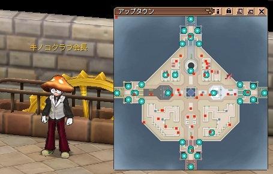
ท่านผู้นำบอกอยากได้คนมาเข้ากองกำลังคนรักเห็ด ให้เราไปช่วยตามหาคนที่มีจิตใจแห่งเห็ดมาให้ที มีของสมนาคุณให้
ไอ้เราก็หูผึ่งทันที ของฟรี เราชอบบบบบบบบ

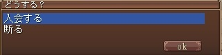
ให้เราตอบข้อแรก เพื่อตอบรับคำเชิญของท่านผู้นำปล.ท่านผู้นำแอบกระซิบ ถ้าหาคนที่อยากเข้าไม่ได้ เจอใครมีแววก็จับมาได้เลย
2.ออกลาดตระเวณ
2.1 เหยื่อรายแรก สาวน้อยร้อยชั่ง ที่ North Acronia Field 北アクロニア平原
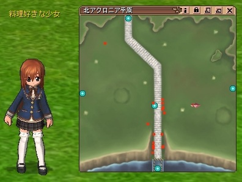
คุยกับเธอ เธอบอกว่าแอบชอบผู้ชายคนนึงอยู่ แต่ไม่กล้าไปบอกเขา ทำยังไงดี
เราเลยบอกไป มัน ต้อง กิน เห็ด เห็ดสามารถช่วยคุณได้ทุกอย่างนะ
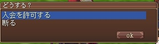
ตอบข้อหนึ่ง บรรยายสรรพคุณเห็ดให้เธอฟัง (แบบบังคับ)พอร่ายจบ คุณเธอก็จะไปอัพทาวแบบงงๆ....
2.2 ทหารผู้หิวโซ ที่ North Acronia Field 北アクロニア平原
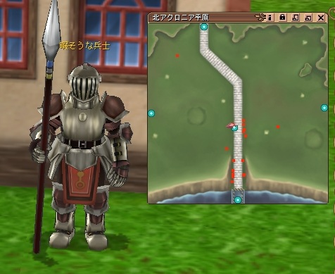
ทหารคนนี้ถามเรา ว่าเรามีอะไรให้เขากินมั๊ย เขาหิวมาก เราได้ที บอกเขาเรื่องสมาคมเห็ด ว่าอยู่ที่นั่นแล้วกินเห็ดได้ไม่อั้น
เขาก็รีบถามข้อมูลทันที
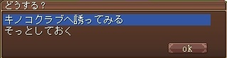
ตอบข้อแรก บอกทางไปสมาคมเห็ด2.3 เหยื่อรายที่สาม เด็กชายผู้เกลียดเห็ด ที่ South Acronia Field 南アクロニア平原

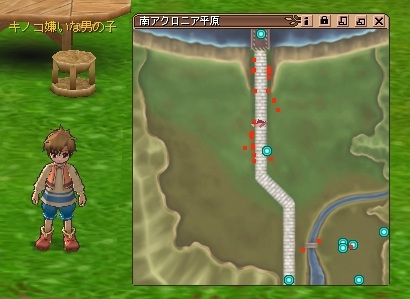
เราไม่ต้องไปสน ว่ามันจะชอบหรือไม่ชอบเห็ด เตะมันเข้าสมาคมทันที แค่เด็ก สู้แรงเราไม่ได้อยู่แล้ว
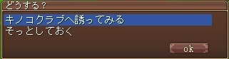
เลือกข้อแรก ยัดเด็กเข้าสมาคม2.4 ผู้โชคร้ายรายที่สี่ ชายหนุ่มพูดไม่รู้เรื่อง ที่ East Acronia Field 東アクロニア平原
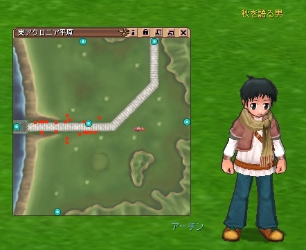
เนื่องมาจาก เราคุยกับเขาไม่รู้เรื่อง ดังนั้นจับเขาเข้า SMS ทันที ไม่ต้องไปแคร์ คุยกันไม่รู้เรื่องอยู่แล้ว
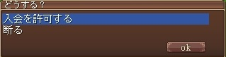
เลือกข้อแรก บังคับเซนต์สัญญา2.5 คนที่ห้า ชายหนุ่มตกงาน ที่ East Acronia Field 東アクロニア平原
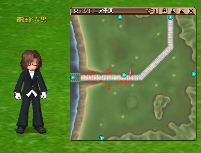
คุยกับเขา เขาจะบอกว่าไม่มีงานทำมาหลายวันแล้ว มีงานดีๆให้เขาทำมั๊ย บอกเขาที
เราก็จัดเต็ม ส่งเขาเข้ากองกำลัง SMS ซะ บอกเขาว่าที่นี่มีงานให้ทำ เงินดีด้วย (มั้ง)
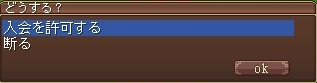
ตอบข้อแรก หลอก..เอ๊ย บอกเขาเข้ากองกำลัง2.6 คนสุดท้าย สาวน้อยผู้หลงไหลในฮวก ที่ West Acronia Field 西アクロニア平原

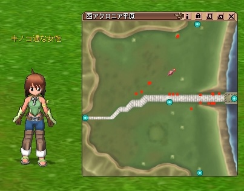
เธอจะคุยเรื่องฮวกให้เราฟัง แล้วเราจะบอกว่ามีสมาพันธ์ฮวกที่อัพทาว เธอก็รีบถามเราทันที แบบไม่ต้องชักชวนให้ยาก
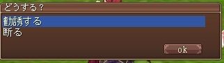
ตอบข้อหนึ่ง บอกข้อมูลสมาพันธ์กับเธอ(ฮวกกับเห็ดก็ออกเสียงคล้ายๆกันนี่นา เนอะๆๆๆ)
ปล.ไม่จำเป็นต้องเรียงลำดับคนที่คุย ใครก่อน-หลัง ได้หมดทั้งนั้น

ปล2.จำง่ายๆ ตอบข้อหนึ่งหมดครับ
3.หลังจากไปเชิญชวนปนหลอกล่อคนมาได้เยอะแล้ว เราก็ไปดูผลงานกันเลย
ไปอัพทาวอีสาน ที่ที่เราพบรักท่านผู้นำครั้งแรก
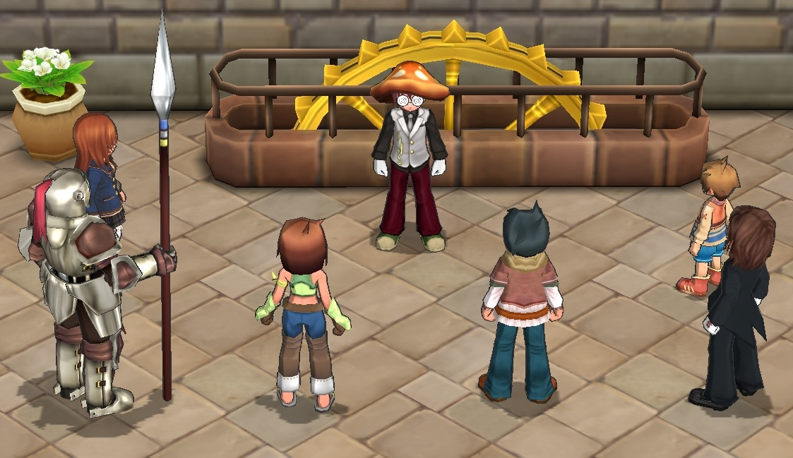
โหย คนเยอะๆๆๆๆ งานนี้ได้รางวัลตอบแทนงามแน่

ให้เราไปคุยกับท่านผู้นำ ท่านผู้นำจะให้โคมไฟเห็ดเรามา
きのこランブ
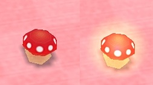
ซ้ายธรรมดา ขวาเป็นตอนกดใช้(หลอก...... เอ๊ย ชวนคนมาตั้งเยอะ ให้แค่เนี่ย)
4. เราถามผู้นำ ทำไมรางวัลได้แค่นี้ ท่านผู้นำบอก เราอยากให้เจ้าช่วยอะไรอีกซักหน่อยน่ะ
ที่นี่ มันไม่น่าอยู่สำหรับกองกำลัง SMS ไปหาที่อยู่มาให้พวกเราใหม่ได้มั๊ย
เราก็ได้แต่ยอมรับทำไป
EX. ตรงนี้ สำหรับคนที่ยังไม่เคยเปิดเควสชวนคนเข้าหมู่บ้านใต้ทะเลสาปอูเทน่า 南ウテナ開拓地
คนเคยทำข้ามไปเลยนะครับ
ให้ไปที่ หมู่บ้านใต้ทะเลสาปอูเทน่า 南ウテナ開拓地 ไปหาคุณผู้ใหญ่บ้าน
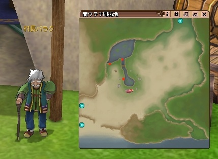
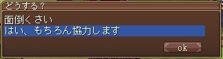
เลือกข้อสอง อาสาเชิญชวนคนเข้าหมู่บ้านแต่ก่อนอื่น ต้องไปชวนแฟนผู้ใหญ่บ้านมาก่อน คนอื่นไว้ทีหลังก็ได้
ต่อไปให้ไปที่ Easter Cape イストー岬 ไปหาป้าโรซ่า
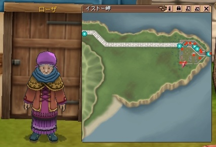
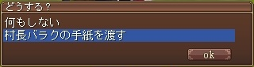
คุยป้าแก เลือกข้อสอง ชวนป้ากลับไปหาพี่ผู้ใหญ่เท่านี้ก็เป็นอันเสร็จครับ
5.บอกท่านผู้นำ ว่าหมู่บ้านนี้น่าไปตั้งกองกำลัง
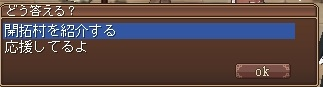
ตอบข้อแรก เพื่อบอกท่านผู้นำให้ไปที่หมู่บ้านแล้วทุกคนก็จะ แวฟฟฟฟฟ ไปที่หมู่บ้านนั้นทันที ห๊ะ อะไรนะ ไม่ได้ไปหมดเรอะ ไปแต่ท่านผู้นำได้งะ

คนอื่นเขาก็จะบอก พวกเขาจะตามไปทำไม พวกเขาไม่ได้รักในเห็ดอะไรเลย ปล่อยท่านผู้นำไปคนเดียวโลดดดด
ภาพหลังจากท่านผู้นำได้จากไป ..........ยังไม่ตายยยยยยยยยยยยยยย
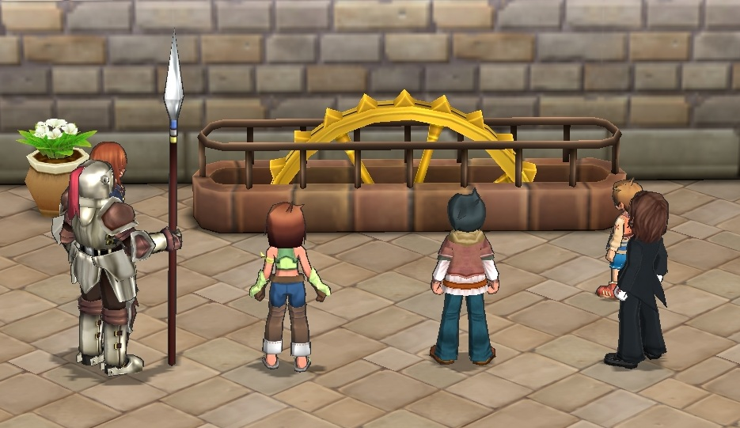
6. ปลอบใจท่านผู้นำ
ไปที่หมู่บ้านทางใต้ทะเลสาปอูเทน่า 南ウテナ開拓地
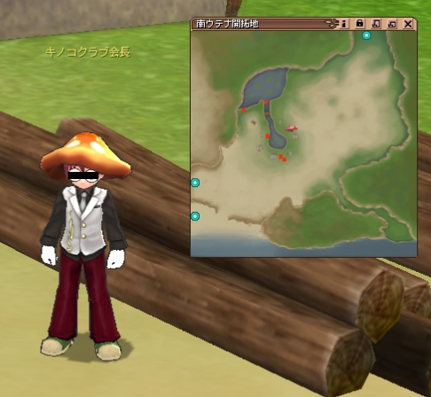
ให้เราคุยกับท่านผู้นำ ท่านผู้นำก็จะบอก ไม่เป็นไรน่าาา เหลือแค่คุณคนเดียวก็พอแล้ว สำหรับกองกำลังนี้
(เราหวังของนะ ไม่ได้หลงไหลในเห็ด แต่เงียบไว้ละกัน)
ท่านผู้นำถาม อยากเล่นเกมกันซักหน่อยมั๊ย ถ้าทำได้มีรางวัล
เราตาโตเลย รางวัลๆๆๆ เล่นสิ เล่นๆๆ อะไรก็ว่ามา
ท่านผู้นำจะให้เราไปหาฮวก ...เอ๊ย เห็ด きのこ มาห้าต้น
แลกกับการตอบคำถาม ถ้าตอบถูกครบสี่ข้อ รับรางวัลไปเลย ง่ายใช่มั๊ยล่ะ
きのこ ดรอฟจากเห็ดทุกชนิด
แมพที่มีเห็ด : North Acronia Field ,South Acronia Field ,East Acronia Field ,West Acronia Field,
Acronia Forest, Fareast Highway, Easter Cape, Utena Lake, East Acronia Coast , Fruit Forest,
Momo Plain , Fushigi Island
7.หลังจากได้เห็ดมาห้าต้น ให้เราไปคุยกับท่านผู้นำ ใครไม่มา ท่านจะสั่งยิงทิ้ง ไม่ใช่ละ....
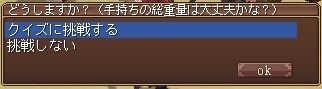
เลือกข้อแรก เป็นการเริ่มต้นเล่นควิซกับท่านผู้นำWarning : ถ้าใครคุยท่านผู้นำแล้วขึ้นแบบนี้
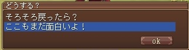
ให้เลือกข้อสอง เลือกข้อแรกจะเป็นส่งผู้นำกลับอัพทาว ซึ่งเราต้องไปลากคอผู้นำมาจากอัพทาวอีกรอบ
ด้วยความปรารถนาดี ภาษาไทยกดหนึ่ง For English Please Press Two
Quiz Zone : สำหรับแฟนพันธ์แท้เห็ด ข้ามไปได้เลยนะคร้าบ

คำถามจะถูกสุ่มออกมา จากทั้งหมดกี่ข้อไม่รู้ นี่คือคำถามทั้งหมดที่ผมเจอครับ
รอ EDIT คำถามเพิ่ม
1 : ขนมปังหน้าเห็ด มีส่วนผสมคือ เห็ด เมล็ดขนมปัง และ .....
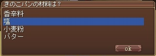
ตอบข้อ 2 เกลือ
2 : ที่แมพ East Acronia Field มีเห็ดฟ้า เห็ดสีชา และเห็ด....
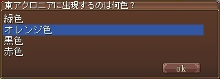
ตอบข้อ 2 เห็ดส้ม
3 : ที่แมพ Easter Cape มีเห็ดอะไรเกิดอยู่บ้าง
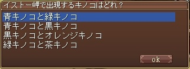
ตอบข้อ 1 เห็ดฟ้าและเห็ดเขียว
4 : ที่ป่าผลไม้ มีเห็ดอะไรเกิดอยู่บ้าง
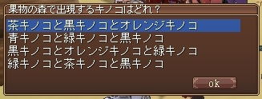
ตอบข้อ 1 เห็ดสีชา เห็ดดำ และเห็ดส้ม
5 : การทำสตูเห็ด มีส่วนผสมคือ เห็ด น้ำแร่ เนย และ....
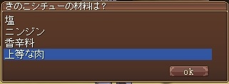
ตอบข้อ 4 เนื้ออย่างดี
6 : ที่ปากแม่น้ำอูเทน่า ไม่มีเห็ดชนิดไหนเกิดอยู่
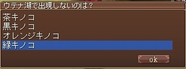
ตอบข้อ 4 เห็ดสีเขียว
7 : ที่ West Acronia Field มีเห็ดสีแดง เห็ดสีฟ้า และเห็ด....
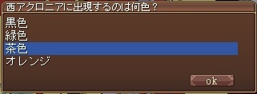
ตอบข้อ 3 เห็ดสีชา
8 : เห็ดสีขาว กินแล้วจะเกิดอะไรขึ้น
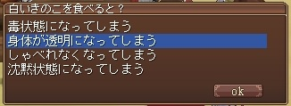
ตอบข้อ 2 เราจะล่องหนได้
9 : อะไรใช้ทำแกงกระหรี่เห็ด
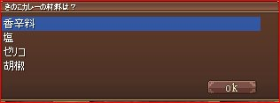
ตอบ เครื่องเทศ
10 : กินเห็ดประหลาดแล้วจะเกิดอะไรขึ้น
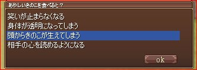
ตอบ 頭からきのこが生えてしまう มีเห็ดงอกบนหัว
ข้อ 9 10 ไม่มีรูปนะครับ เนื่องจากผมยังไม่เคยเจอ
เมื่อเราตอบคำถามถูกครบสี่ข้อ เราจะได้รับเตียงเห็ดและตู้เห็ดเป็นรางวัล
ได้รับมาฟรีๆเลยนะครับ ไม่ต้องเอาเตียงเก่าหรือตู้เก่าไปแลก
การได้รับไอเทมเป็นแบบสุ่ม ดวงล้วนๆครับ สามารถเล่นได้เรื่อยๆด้วย จนกว่าฮวก เอ๊ย...เห็ดจะหมดตัว
จากข้อมูลอ้างอิงใน Wiki มีคนทดลองสุ่ม 246 ครั้ง
ได้ตู้ 65 ครั้ง เตียง 181 ครั้ง นะครับ
คิดเป็นอัตราส่วน ตู้ 26.4 : เตียง 73.6
ตู้เห็ด きのこなタンスสามารถเก็บของได้ 20 ช่อง +หลบเจ้าหนี้??
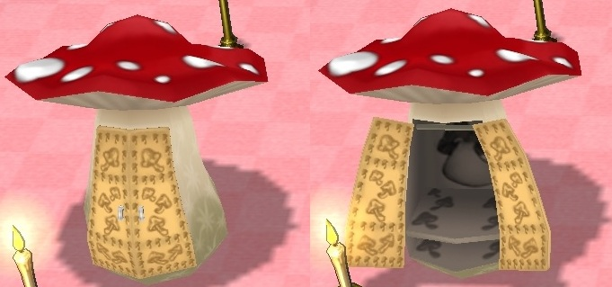
สภาพปกติ / ตอนกดเก็บของ
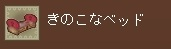
เตียงเห็ด きのこなベッド ไว้นอน.... แหงละ เตียงที่ไหนมีไว้ซักผ้าบ้าง

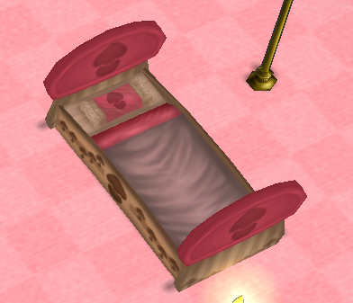
________________________________________________________________
จบเควสอย่างสวยงาม
ปล.ซับนรก อย่าจริงจังกับเนื้อหามากนะครับ
ปล2.คนทำเมาเห็ดมาก
ปล3.คนทำเมาฮวกมาก
ปล4.ปล3คืออะไร
ปล5.ขาดหายอะไรก็โพสบอกหน่อยนะครับ เช่นคำถามที่หายไป ผมจะ Edit ใส่ให้
ปล6.ปลจะเยอะไปไหน
________________________________________________________________